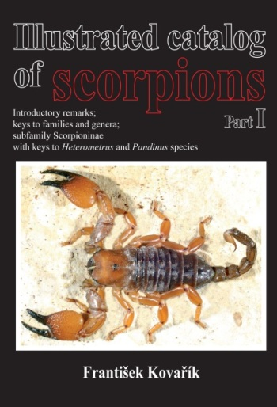
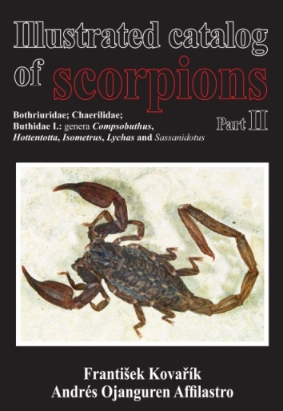
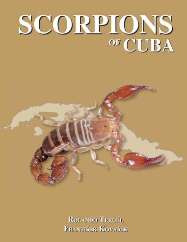

Address for sending papers and specimens:
František Kovařík
c/o František Šťáhlavský
Department of Zoology, Charles University
Viničná 7
CZ-128 44 Praha 2
e-mail address kovarik.scorpio@gmail.com
Illustrated catalog of scorpions. Part I (2009).
The volume has 170 pages in A4 format, with is hard-bound, and contains 650 color photos. The enclosed pdf of 10
selected pages gives an idea of its internal arrangement and appearance.
The volume can be ordered directly from author at kovarik.scorpio@gmail.com.
The price is 80 euros, which includes postage.
Illustrated catalog of scorpions. Part II (2013).
Bothriuridae; Chaerilidae; Buthidae I., genera Compsobuthus, Hottentotta, Isometrus, Lychas, and Sassanidotus
The volume has 400 pages in A4 format, is hard-bound, and contains 1621 color photos, 253 black-and-white photos, 110 drawings,
and 26 distribution maps. Contains 332 species including 143 synonyms of which 19 are new (total of 475 taxa).
Described are eight new species of the family Buthidae. The enclosed pdf of 14 selected pages give an idea about the internal arrangement
and appearance. The book can be ordered directly from the first author at kovarik.scorpio@gmail.com. The price is 120 euros, which includes postage.
Special offer: It is possible to purchase both volumes, Part I and Part II of the Illustrated Catalog at a discounted price of 170 euros, which includes postage.
|

|
|
Scorpions of Cuba (2012).
This book has 232 pages in B5 format, is hard-bound, and contains
636 color photos of all Cuban species, their mating, parental care, localities, distribution maps,
and descriptions of Cryptoiclus rodriguezi gen. et sp. n. (Diplocentrinae) and Microtityus pusillus sp. n.
The enclosed pdf of 11 selected pages gives an idea of the
internal arrangement and appearance. The book can be ordered directly from the second author at kovarik.scorpio@gmail.com.
The price is 60 euros, which includes postage.
|

|